在转码的过程中，我们可以使用硬件来进行转码的加速，今天记录一下在Centos7环境下安装驱动以及cuda模块。
下载驱动
如果打算安装CUDA10.0及以上的版本则不需要单独安装驱动，cuda10.0自带驱动驱动忽略该驱动的安装
例如我们下载Quadro P2000 linux64的驱动
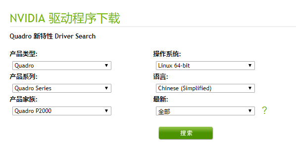
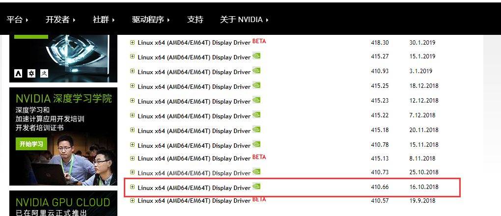
之所以安装这个驱动是因为要安装的cuda10.0也是410的，之后运行安装驱动程序就好了。
安装cuda10.0
1，下载安装包
安装包下载 在该网站上下载安装包
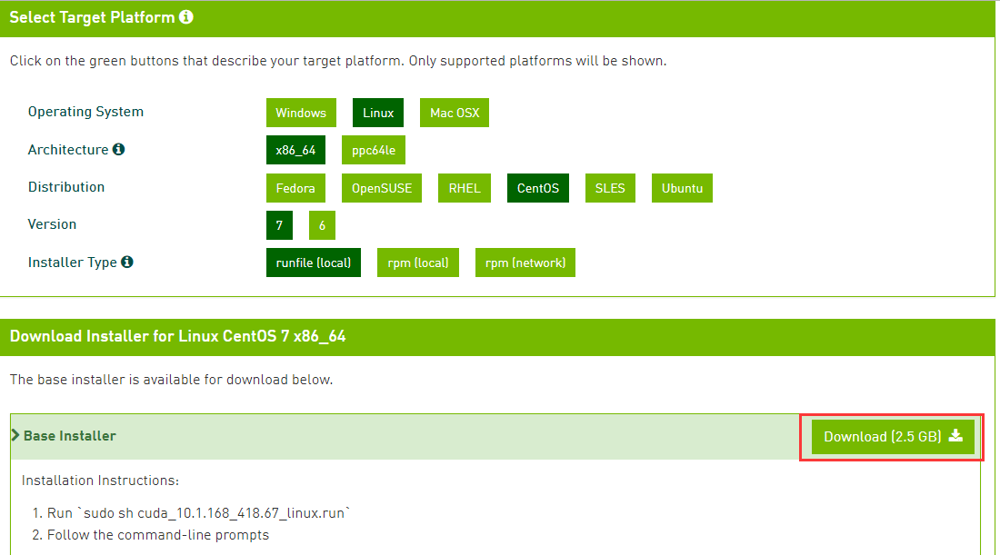
2，版本选择
通过以下按钮选择历史版本的cuda，找到10.0下载，然后选择对应的系统
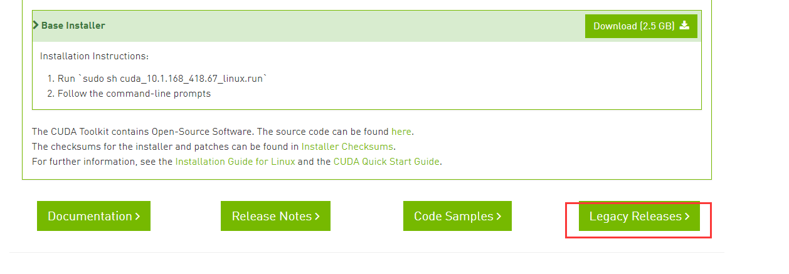
3，运行.run文件
下载完安装包放在linux上直接运行.run文件
chmod +x cuda_10.0.130_410.48_linux.run
./cuda_10.0.130_410.48_linux.run
4，然后一直按回车键直到：
回答：accept
5，是否安装驱动
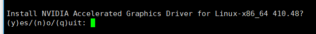
是否安装驱动，这里选择安装：y,因为我们自己没有提前安装驱动，如果提前安装过驱动，这里就不选择安装：n
6，是否安装OpenGL
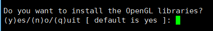
选择;n
7，是否安装x-config
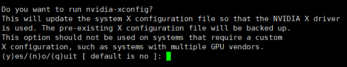
选择：n
8，是否安装Toolkit
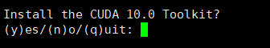
选择：y
9，cuda目录
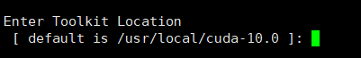
直接回车，选择默认安装路径
10，是否创建软连接
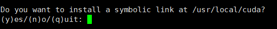
选择：y
11，是否安装示例
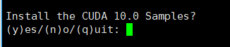
为了节约空间，这个不安装
选择：n
12，然后开始安装
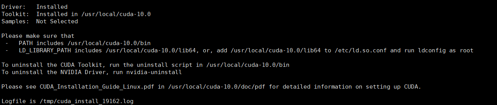
表示安装成功
13，添加配置文件
vim /etc/profile
写入：
export PATH=/usr/local/cuda-10.0/bin:$PATH
export LD_LIBRARY_PATH=/usr/local/cuda/lib64:$LD_LIBRARY_PATH
保存：
source /etc/profile
14，卸载驱动及cuda
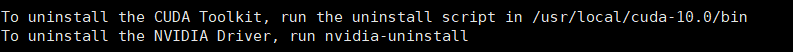
⚠️ 注意
1,千万不要重复安装显卡驱动，会导致系统损坏
2.升级cuda的时候，一定要将旧版本的cuda卸载干净，否则会出现意想不到的错误
15，查看命令
1，检查显卡类型
yum install pciutils（如果没有这个命令，则下载）
lspci | grep VGA
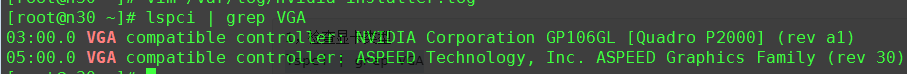
2，检查安装是否成功
nvidia-smi
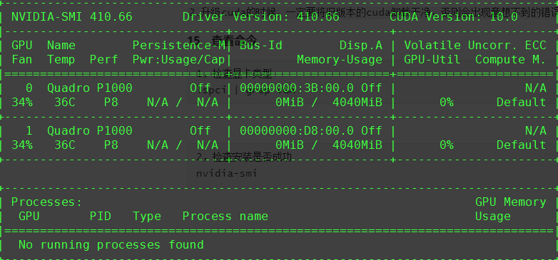
错误处理
1， /usr/bin/perl: bad interpreter: No such file or directory
yum install gcc
yum install perl
2，kernel源安装
检查系统版本
uname -a
yum install kernel-devel-$(uname -r) kernel-headers-$(uname -r)
先查看源是否相同，如果没有则需要下载
3，禁用nouveau（对某些版本需要）
1，修改文件
1，修改文件
cd /etc/modprobe.d
vim nvidia-installer-disable-nouveau.conf（如果没有这个文件，则手动生成）
内容：
# generated by nvidia-installer
blacklist nouveau
options nouveau modeset=0
2，备份 initramfs
mv /boot/initramfs-$(uname -r).img /boot/initramfs-$(uname -r).img.bak
3，重建 initramfs
dracut -v /boot/initramfs-$(uname -r).img $(uname -r)
4，重启机器
reboot
5，检查nouveau driver确保没有被加载
lsmod | grep nouveau
没有加载则为空，有加载则如图，说明设置没有生效，需要重新设置
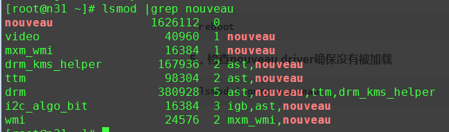